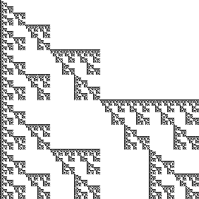
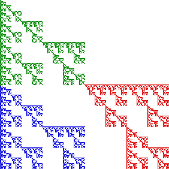

|  |  |
This fractal is a dendrite because it is connected, contains no loops (removing any point except a branch tip disconnects it), and has infinitely many branch points.
As an example of a branch
point, take the fractal to be in the unit square. Then the point
The line from
As suggested by the colors on the right, the dendrite is made of
three copies of itself, each a copy of the original, scaled by a factor of
Return to Gasket Relatives.